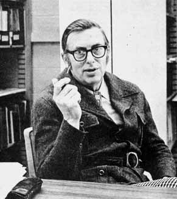
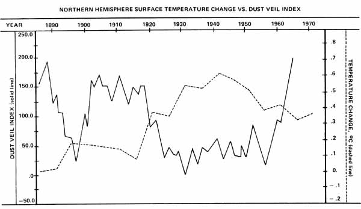

To be very blunt about it, several journalists (apparently looking for a sensational "peg" upon which to hang a story) have quoted Dr. Bryson out of context so that he appears to the casual reader to be some sort of mad scientist shouting that "the next ice age is coming to get you ".
Nothing could be further from the truth.
Reid Bryson is a very reasoned, calm, realistic man in his mid 50's whose credits in meteorology, climatology, and related fields fill four page& Still, it would be unfair to try to fit Dr. Bryson into a single neat box labeled "climatologist". Reid Bryson is an environmentalist in the broadest sense and his thoughts on the planet, its human population, and that population's activities range as widely and carry all the force of such acknowledged environmental spokesmen as Barry Commoner, Paul Ehrlich, and Dave Brower.
Bryson is a compassionate man and has a sense of humor. But he speaks with conviction and has the facts and figures to back those convictions. And he pulls no punches: Dr. Bryson uses the term "successful famine" in a way that makes you think he's given a lot of thought to what it really means . . . as Bill Hanley found out recently when he interviewed Bryson in his office at the University of Wisconsin.
PLOWBOY: Dr. Bryson, a recent article in the British publication, New Scientist, referred to you as a "prophet of climatic doom". How do you view yourself and your work?
BRYSON: Well, I am not a prophet of climatic doom. I think of myself as a realist. There's a reality of the earth and its atmosphere and the way they function. Certain phenomena the shifting of rainfall patterns and the onset of ice ages-do take place and we're beginning to know why they occur and when to expect them. I simply say that we should take these climatic changes into consideration when we think about what the future might hold.
PLOWBOY: It seems obvious, then, that if we're to understand your views of the future . . . we must first understand the climatic theory on which they are-in part, at least-based. Can you give us a simplified explanation of how the earth's atmosphere operates?
BRYSON: It's an extremely complicated mechanism which boiled down to the barest basics that have a lot of " ifs" 46 ands", and "buts" in them-can be described as a gigantic solar-driven heat engine.
Now this, of course, is common knowledge. Every meteorology textbook starts out by saying that the atmosphere circulates over the planet's surface because of the energy absorbed from the sun. Unfortunately, many of these same books move on to studies of very local and very specific weather so quickly that their readers never properly appreciate the importance of this larger circulation. So allow me, if you will, to stress the significance of this most basic of all movements of the atmosphere.
In the first place, we don't have any evidence that the amount of energy the earth receives from the sun varies much. So far as our measurements go, this "solar input" is pretty constant. As a matter of fact, we generally refer to it as the "solar constant".
But this even radiation of energy does not fall evenly upon all the earth's surface. Because the planet is spherical, or ballshaped. And as the earth revolves and rotates around the sun, it presents its "center"-the tropics-more directly to that radiation of energy than it presents its "ends"-the polar regions to the sun's rays. As a result, the earth's tropics absorb more energy and warm up more than its polar areas do. And it's this difference in temperature that causes the mass of air surrounding the earth to operate as a mammoth heat engine.
This is a basic principle of physics, you see. A heat engine can't function unless it has both a hot side and a cold side. The difference is what makes it go.
And it's this same kind of difference-a variation in temperature-that makes the atmosphere go. Whether the earth as awhole is warmer or cooler isn't that important in this case. It's' the contrast between our planet's tropical temperatures and its polar temperatures that dictates the atmosphere's behavior. Increase the contrast-either by heating the tropics or cooling the poles-and the earth's envelope of air will rise around its middle, flow towards either end, settle, and flow back to its middle faster. Decrease the difference-either by cooling the tropics or warming the poles-and that movement of air will slow.
PLOWBOY: And it's this circulation of the atmosphere from the earth's tropics towards its polar regions and back again that determines local weather all over the planet's surface.
BRYSON: Yes. Of course, many additional factors-the rotation of the earth, the placement of its land and water masses, the amount and kind of vegetation that grows in any particular area, a thousand other variables-modify and affect this basic circulation pattern. But this is the basic pattern. Once you discount all the lesser variables, this larger movement of air is what determines our weather. Where the rain will fall and where it won't. Who will eat and who'll go hungry.
This underlying "heat engine" circulation of the atmosphere, in short, determines-far more than most of us realize-the selection and distribution of life on the earth's surface. And it can be altered far easier than we generally suppose.
PLOWBOY: How?
BRYSON: In many ways. Let's say that, for one reason or another, the atmosphere is filled with dust or smoke or something else that makes it less transparent over the continental United States. Or the Indian subcontinent. Or some other large land mass. Obviously less sunlight would reach the earth's surface in that area, the surface temperature of the region would fall somewhat, but the temperature of the atmosphere far above that land might rise a little. This, in turn, would alter the difference-the contrast-between the temperature of that body of air and the temperature of the air masses around it. And they would begin to interact somewhat differently than they had interacted before. They would begin to flow across the earth's surface in new patterns . . . to take up and absorb water vapor at a different rate than before and to release that moisture in areas that hadn't expected to receive precipitation, perhaps in any form.
Or say that the atmosphere over a large area is left nearly as transparent as it has always been . . . but that, due to one factor or another, the composition of the air mass is changed so that it contains more carbon dioxide. In this case, the sun's rays will still reach the earth's surface and warm it as they've always done . . . but the increased carbon dioxide will act as a blanket which keeps that warmth from reradiating back into space as it normally would. This is the wellknown "greenhouse effect" and it causes the affected land mass and the body of air over it to hold more of the sun's heat than they ordinarily would. And this, of course, alters the contrast between that air mass and the bodies of air around it. Which, in turn, causes these various components of the atmospheric heat engine to interact differently than they've interacted before, and so on. The end result, once again, is that the weather patterns over a broad area can be affected. Thereby decreasing the crops in some regions and making those in others grow better than expected. Leaving some people to starve while others enjoy unusually bountiful harvests.
PLOWBOY: And you believe that changes of this nature are taking place on a global scale?
BRYSON: Oh, there's no question that changes of some kind are taking place in the earth's climate. Such changes have always taken place. Thousands of scientific papers document the fact that the climate has changed in the past, and experience has shown us that the laws of physics and nature don't just suddenly stop or change in midstream. So, if the climate has changed in the past-and it has-it obviously can change now and in the future and probably is and will.
This leads me to reject the idea that the climate is fixed and just flips and flops around some fixed value. We can also reject the assumption that our climate is random. If it were random, then all the weather we have would be random too . . . and, if that's the case, then every weather forecaster in the world had better quit because you can't forecast random events.
So let's do three things. First, let's accept the fact that the climate could be changing on a global scale right now. Second, let's try to find evidence which either confirms or denies that such a change is taking place. And, third, if our evidence suggests that the earth's climate is indeed changing in any way . . . let's see if we can find a logical reason for such a change to be taking place.
Furthermore, let's do all this . . . NOT because we want to scare anyone . . . NOT because we want to find some terrible global calamity just over the horizon . . . and NOT because we want to draw attention to ourselves by forecasting the future. Let's just quietly and rationally try to figure out where the climate might be headed so we'll be able to prepare ourselves well in advance for any changes that might lie ahead.
PLOWBOY: All right. Let's explore this point by point. It's obvious you've accepted the premise that the earth's climate could be changing . . . so that takes care of Step One. And moves us directly to the Big Question of Step Two: Do you have any real reason to believe that our planet's climate is actually being altered in any major way at this time?
BRYSON: Yes, I do. In my spare time, so to speak, I've been putting together an equation for calculating the temperature of the Northern Hemisphere . . . as it is affected by the sun's radiation, by the amount of that radiation which gets through the atmosphere to the earth, by the amount which is absorbed into the hemisphere's surface, and by the amount that radiates back out into space. And I believe we've put together an equation which reproduces what should have happened and what actually did happen to the Northern Hemisphere's temperature during the last century. Furthermore I think we've done this quite well. We've even charted the information on a graph.
PLOWBOY: And you find,?
BRYSON: We find that, since 1945, the Northern Hemisphere has cooled one half of one degree Celsius.
PLOWBOY: That isn't very much, is it?
BRYSON: Well it's certainly not a lot in, say, this room. I can go over to the thermostat and turn it down half a degree Celsius and we'd hardly notice the difference. And that's what makes this figure so deceptive. Because that half-degree change I'm talking about is the average for the whole Northern Hemisphere. South of latitude 50 there's been almost no change at all, but away up in the Arctic-over maybe 1/10th of the hemisphere's surface-there's been an enormous change, shown by high latitude weather stations.
PLOWBOY: What do you mean by "enormous" and how do you know that this change has actually taken place?
BRYSON: I didn't personally do the fieldwork, if that's what you mean. Other people, such as Martin Rodewald, the German meteorologist, did that Rodewald, for example, studied the measured water temperature of the North Atlantic and found that-from 1951 to 1972-it dropped quite dramatically. It went down rather steadily throughout the 50's, leveled off somewhat during the 60's, then started down again.
I simply came along then, took Rodewald's map of the cooling of the North Atlantic in that 20-year period, and compared it with work done by John Imbrie, a research associate of the American Museum of Natural History. Imbrie has mapped the cooling of the North Atlantic during the height of the last ice age. The two maps-I found-were remarkably similar, except that the temperature drop from 1951 to 1972 was only 1/6 the drop experienced by the North Atlantic during the ice age.
PLOWBOY: One-sixth! In 20 years!
BRYSON: Yes. So I said, "Hey. Look. Maybe we'd better think about this."
PLOWBOY: Darn right. Which brings us to Step Three of the points you outlined a few minutes ago: Do you know of any logical reason for such a change to take place?
BRYSON: Oh yes. And so do you, because I've already given you that reason. Just think of the whole Northern Hemisphere as a gigantic heat engine that absorbs an excess of solar radiation in the tropics and a deficit of the same radiation in the Arctic. This difference sets up a circulation of the atmosphere which transports heat from the tropics to the polar region. Right? And as those masses of warmed air from the tropics move north, they radiate their heat energy out into space until-by the time they've reached the Arctic-they've cooled and begun to flow back to the tropics.
This is what the circulation of the atmosphere is all about. Transporting heat from the tropics to the polar regions and getting rid of it there. And if you pump enough particulate matter into the air to reduce the amount of sunlight that strikes the earth's surface in the first place or if you reduce the amount of carbon dioxide in the atmosphere so that the heat energy which does get in can immediately radiate right back out into space . . . then you have less warmth to haul from the tropics to the polar regions. And, as we've already documented in the Northern Hemisphere, those polar regions-in this case, the Arctic-get colder.
PLOWBOY: Is this what's happening?
BRYSON: Yes and no. Actually the amounts of both particulate matter and carbon dioxide in the atmosphere are increasing. It's just that the cooling effect caused by the first is increasing faster than the warming effect caused by the second. And, as a result, the Arctic has gotten colder.
PLOWBOY: Where does the particulate matter and the carbon dioxide come from?
The heat produced by human
activity in New York City during the
winter is greater than the amount of heat
the city receives from the sun.
BRYSON: Volcanoes used to be the primary source of particulate matter found in the atmosphere. When you go back over the last century and chart out the hemisphere's temperature, you find that periods of heavy volcanic eruption show up on the graph as cold times . . . and stretches of quiet volcano activity are warmer. We've tabulated some 5,000 volcanic events and there's a very definite correlation. Massive eruptions during the 1880's, for instance, made the Northern Hemisphere colder. Then there was a quiet period and then, from about 1904 until 1920, a fair amount of activity' After that, volcanoes really died down until around 1955, then they tapered off again until-from 1963 on-we see a lot of eruptions. The important point is that, when you chart this activity out, you immediately notice that the hemisphere warms up during periods of few volcano eruptions and cools following heavy eruptions.
PLOWBOY: And that's all there is to it?
BRYSON: Oh no. A completely wild card got shuffled into the deck back about 1930 or so, when the Industrial Revolution became a worldwide phenomenon and we began spewing both man-created particulate matter and man-created carbon dioxide into the air at an increased rate. This new source of atmospheric pollutants really started to influence the earth's climate significantly around 1945.
PLOWBOY: Why then?
BRYSON: Because by 1945, as a by-product of the Industrial Revolution, we had learned to use antibiotics and pesticides. By 1945 we were beginning to control malaria on a massive scale and we were beginning to save tens of millions of other lives that ordinarily would have been lost to diseases and accidents. Thanks to antibiotics and pesticides, the planet's human population suddenly had a much higher survival rate . . . without a corresponding reduction in its birth rate.
The Industrial Revolution, in effect, fed upon itself. It made it possible for many more of us to live and reproduce at the same time it allowed each of us to farm more marginal land, build and operate bigger machines, construct larger foundries and factories, and so on. All of this increased activity by a burgeoning population, for the first time, pumped tons upon tons of man-created particulate matter into the air. And that's a major reason why our climate began to cool around 1945, and has been cooling more or less ever since.
PLOWBOY: Well it's certainly obvious that, thanks to the Industrial Revolution, our consumption of fossil fuels has increased an incredible amount. And it's just as obvious that, as we burn that oil and coal and gas in our factories, we're spewing a great amount of both carbon dioxide and black glop into the air.
BRYSON: Yes. Thanks to today's environmental awareness, most of us now recognize at least part of what you've just pointed out. Dozens of scientific papers, in fact, have been published about industry's consumption of fossil fuels, its creation of carbon dioxide, and how the resultant "greenhouse effect" will cause a rise in the temperature of the atmosphere.
I find it interesting, however, that the same people who write those papers generally seem to overlook the even greater amounts of particulate matter which those same factories and foundries pump into the air. Not to mention the tremendous quantities of particulates now kicked into the atmosphere by poor farmers in primitive agricultural and marginal semi-arid regions all over the world.
PLOWBOY: You consider agriculture as guilty as industry, then, in creating the atmospheric pollution which is causing the earth's climate to change?
BRYSON: Very nearly so. The biggest single sources of atmospheric particulate matter, next to industry, are those primitive agricultural regions which practice slash-and-burn fanning techniques. That's something like 60 million tons of smoke per year right there.
And it's those poor farmers in northwestern India and all the other countries where too many people are trying to gouge a living from too few marginal acres. I've been there. I've seen those places . . . where every person, every cow, every goat, every plow is followed by a cloud of dust. That may not seem like enough particulates to change something as massive as the earth's climate, but just multiply all those separate little clouds by the hundreds of millions of people and animals and machines that make them. I figure that each individual only has to kick 1-1/4 ounces of dust into the air each day to modify the climate as much as it's already been modified.
All in all, the particulate matter pollution from industry probably adds up to far less than half the total of such pollutants that man puts into the air. Where does much of the rest come from? From agriculture, mostly in the so-called "underdeveloped" nations.
And the irony of this whole situation, of course, is that the increasing amount of dust in the air isn't causing the temperature of the Northern Hemisphere to change much south of latitude 50 . . . but it is causing the Arctic to cool a noticeable-a measurable -amount. This increase in stirred-up particulate matter, in other words, seems to be increasing the contrast between the hot and the cold sides of the Northern Hemisphere's atmospheric heat engine. Which, in turn, is altering much of the hemisphere's climate, especially in those same semi-arid and marginal countries whose subsistence agriculture is kicking a great deal of the dust into the air in the first place. These countries live or die on monsoon rains and, because of the dust they're now creating, those monsoons seem to be drying up and becoming increasingly erratic.
PLOWBOY: Is man doing anything else-besides releasing carbon dioxide and particulates into the air-that can alter the climate?
BRYSON: Well the Industrial Revolution, by making the modem megalopolis possible, has certainly concentrated the release of heat into the atmosphere. There's no such thing as perfect insulation, you know, so every time you warm your house or run an engine or fire up a blast furnace . . . sooner or later, you release heat into the air. And today's cities-which are built on the use of fossil fuels-absolutely pour such heat into the atmosphere. Take New York City, for example. The heat produced by human activity in New York during the winter is greater than the amount of heat the city receives from the sun.
Now obviously, when you create a hot spot like that on the earth's surface, you modify the local climate. It's warmer in a city. Drier. Heavily urbanized areas receive a different sequence of rainfall, a different amount of precipitation, a different quality of air, a different amount of ultraviolet light than the surrounding countryside.
Go to a big city, for instance, and look at a policeman or a telephone lineman. He works outdoors all day but does he have a suntan? No. Why? Because the urban air pollution screens out the ultraviolet light. This is also true, by the way, in northern India. The dust there is so thick that, for a large part of the year, no ultraviolet light to speak of reaches the ground. So-in addition to their other miseries-the population of that part of the country suffers a chronic vitamin D deficiency.
PLOWBOY: I take it then that this release of heat and this screening of ultraviolet light and so on done by our cities or specific agricultural areas is pretty localized,
BRYSON: There's no question that such activities modify the local climate. A modern city does create its own weather to a lesser or a greater extent. And there is also evidence which indicates that our larger urban areas now influence the surrounding countryside. A number of studies, for example, have shown that the frequency of thunderstorms and the amount of rainfall downwind from St. Louis is different than it would otherwise be. This is due to the particulate matter put into the atmosphere by St. Louis, to the heat the city puts into the air . . . to the whole composite effect that that metropolitan area has on the atmosphere.
Now we're not yet at the point where we can calculate exactly what collective effect all our sprawling cities have on the larger climate. But it is quite possible that the growing megalopolis-type urban areas here in North America and the new concentrations of people in Europe and elsewhere are already slightly modifying the atmospheric circulation patterns of the whole hemisphere. In fact, since we already know that these metropolitan areas do alter the micro-climates around them, it would be hard to believe that they have no effect at all on the macroclimate.
PLOWBOY: And any one of these man-created inputs-say the heat poured into the air by a growing city-will probably get worse before it gets better.
BRYSON: As you know, the people who make such projections have forecast both a vastly increased per capita consumption of energy and an expansion of world population from our present approximately four billion to something like 7 billion by the year 2000 . . . which is just 24 years away. Now, if New York City already puts more manmade heat into the air during the winter than it receives from the sun and if we substantially increase our planet's population-especially our urban population, because that's where most of the new people will live-and if we all use some incredibly larger amount of energy per capita . . . well. It's obvious that at some point the heat we release from out concentrated urban areas or other hot spots will probably have a significant effect in modifying the climate.
Let's consider just one possibility. When the volcano Surtsey erupted near Iceland in 1963, the scientific community and a lot of laymen thought that it was sort of neat. Here was this brand new volcano, you know, coming up out of the sea. So a number of people went up there and photographed it and took measurements and so on.
Now in some respects Surtsey was neat. But in others it most certainly wasn't. Because as it released its heat into the atmosphere, it created tornadoes. And that was away up in the North Atlantic where it's a little difficult to produce tornadoes.
All right. Now suppose we build one of the huge energy parks that our utilities and the government are talking about. When you put a dozen nuclear plants all together in one very small area that way, you're talking about pumping as much concentrated heat into the atmosphere as a volcano releases. And if you do that down in the nice, moist southern United States, where tornadoes don't have to have much of an excuse to get themselves born in the first place . . . do you need more tornadoes down there? I think we could do without them.
PLOWBOY: I believe that the power companies refer to this release of heat as "thermal enrichment".
BRYSON: Yes.
PLOWBOY: And, whenever someone suggests that such "thermal enrichment" might do something nasty to the atmosphere, their spokesmen rather glibly explain that their scientists are also looking into the possibility of discharging that waste heat into some large body of water instead of into the air.
BRYSON: It's the same difference. If you put the quantities of heat we're talking about into a lake or river or even a very large bay of an ocean, you're going to warm that water and make it evaporate faster. And that evaporation is going to affect the climate of a much bigger region than those utility spokesmen want to think about. Or to be served lawsuits from. The stakes in our population and energy game are getting to be pretty big.
PLOWBOY: That's right. You trace much of this change that you see taking place in the climate directly back to the Industrial Revolution . . . which, boiled down to its barest essentials, is nothing but a population-energy equation.
BRYSON: What it really gets down to in the end is Paul Ehrlich's thesis: "There ain't nothin' that wouldn't be improved by having fewer people."
The earth is simply saturated now with people. There is, in fact, so many of us currently using so much of the planet's resources-especially fossil fuels-that we are altering the earth's climate. And then, when those alterations sweep across whole countries, our sheer numbers prevent us from getting out of the way before we get hurt.
It wasn't always this way, you know. About 130 years ago, for example, when wet weather created ideal conditions in Ireland for a fungus to kill the potato crop, two million Irishmen just packed up and moved to the United States. There were still enough open spaces then-in North America, South America, Africa, Australia, New Zealand, and other places-for millions of people to pick up and move to if the climate changed for the worse where they were already living.
But could two million Irish move to the U.S. today? Where would they go? Where can the starving people in India or Bangladesh or the Sahel-along the drought-parched southern edge of the Sahara in Africa-go? No place. All the land is now taken and the immigration barriers are up.
The earth is saturated with people, and that's a problem in itself. Because the economies of our various countries are based on what has happened in the past. The relatively recent past. Areas of rich soil that have received abundant rainfall and sufficient sunlight during the last few generations are-in the main-now heavily settled and intensively farmed. We're all geared up, in other words, to keep right on doing what we've been doing for the past couple of generations. We expect-we absolutely depend on-weather this year and next year and the year after that which is very much like the weather we've had for the last 30 or 40 years.
PLOWBOY: But that probably won't happen! Not if you're right when you say that the world's climate is changing.
BRYSON: Oh the climate has been changing, all right. This is one point on which I do make a firm statement. The climate has changed. Whether it's still changing or will continue to change, we don't know yet. And that's the whole point of my work.
We're not looking for something that tells us, "Oh boy! It's going to get cold everywhere," or "Wow! It's going to get warm everywhere." That's not the way the climate behaves.
What we're trying to find are clues to far more subtle shifts in temperature and rainfall and so on. Seemingly small changes which, as slight as they may appear to be, can spell life or death to millions upon millions of people.
Take the recent drought along the southern edge of the Sahara. At the same time that Chad, Upper Volta, Senegal, Mauritania, and the other countries were suffering down there, Algeria and Morocco and so on along the Sahara's northern edge were receiving more than normal rainfall. Even with their increased precipitation, however, they still weren't exactly running over with grain and they didn't have enough surplus food to ship to their southern neighbors.
And so this relatively small shift in rainfall patterns caused the suffering and death of hundreds of thousands of people. It damaged an already marginal farming area so badly that it may never be able to support its former population again. This is the kind of seemingly small shift that produces problems and which we'd like to be able to predict.
Or take India and its 600 million marginally fed people. From the time of India's independence to the late 60's, the country had superb weather. During the last few years, however, its monsoons have become increasingly erratic. Will India have a total monsoon failure sometime in the next few years? And if it does, what will happen? We need to have those answers before the problem hits us.
We can ask the same kind of question about ourselves, of course. Throughout the 1960's we had excellent growing conditions here in the United States, especially for corn. This lasted right up until 1972 or '73 . . . long enough so that we kind of got to expect it. But as at least one individual who studied the situation-Jim McQuigg, a research meteorologist for the Environmental Data Service in Columbia, Missouri pointed out, the probability of having that kind of weather continue for 15 consecutive years was only about one in 10,000. Since then, of course, the Corn Belt suffered a major drought in 1974 and, -although not minor to the people involved, a minor drought in '75.
Now. What does this mean? It means that we were probably very foolish when we sold 18 million tons of grain to Russia in 1972. That sale totally wiped out our big reserve just before we ran into bad weather. Wouldn't it have been nice if we'd been able to predict the 1974 drought before we depleted our reserves?
PLOWBOY: Then again, we may not have much opportunity to face the problem of reserves in the future.
BRYSON: Not on a planetary basis. Because we are now at a point where the population of the earth is pushing very hard against the earth's capacity to feed it. And that, of course, is why these fluctuations in the climate are becoming so vitally important.
As long as there was plenty of extra land to use and plenty of surplus food stored away around the world, we didn't have a lot to worry about. We were rich. We had money in the bank. What did we care if our income dropped by 20% one year? We'd just take a little out of our bank account and make up the difference.
But we're not rich any more. The bank is empty. The U.N.'s Food and Agriculture Organization figures for 1974 said that our total global food reserves at one point were right down to the 2% that was in boxcars, in ships, in silos waiting to be hauled somewhere, or in millers' storage ready to be turned into flour.
When you get down to that thin a margin, especially when the earth's human population is increasing by 85 to 90 million a year, every little year-by-year fluctuation that can affect your food supply becomes very important.
Suppose that India's monsoon really fads this year and her crop is reduced by one-third. That means 200 million of her people are going to go hungry unless someone else feeds them. How much food does it take to feed 200 million people living at the level of a developing nation? Fifty million tons of grain.
And where's that grain going to come from? We're the world's biggest exporter and the 18 million tons we sold Russia in 1972 wiped us out after an uncommonly long period of excellent growing conditions in this country. We sold the Russians more than 10 million tons in 1975 and the government said that was all we could afford to sell.
So where could India get 50 million tons of grain? Especially if, as would probably happen, the monsoons failed in
other densely populated regions at the same time they faded in India. That, unfortunately, tends to be the case with monsoons. See. It really wouldn't take a very large shift in global weather patterns right now to make a year's harvest come up 25% short of the world's food demands.
PLOWBOY: Are you saying that the climatic changes we're now experiencing are worse than they've been in the past?
BRYSON: No. Not worse. Just different. The climate has always changed. Conditions have always gotten slightly more desperate in some places while getting slightly less desperate in others. What has changed is us. There's too many of us now. We can no longer move from place to place to follow these changing weather patterns. We no longer have stores of surplus grain to ship from areas of good weather to regions of drought. We-by breeding the way we have-are what has changed.
PLOWBOY: Then I guess we should reduce our numbers.
BRYSON: How? Voluntarily? That works with small groups that are aware of the problem. It works, for instance, with some of the people here in the United States and in Europe. But how does it affect the Soviet Union, where mothers of more than ten children are given a prize? How does it affect India, where the number of children in a family is still all-important?
Look at the numbers. Look at the birthrate per thousand. It's three times as high in Latin America as it is in the United States. Three to four times as high in Africa. Those countries have enormous birthrates, yet they can't feed themselves now. They must be assuming that their food is going to come from somewhere else. But where.? It's a mistake to assume that North America can feed the rest of the world. A realistic assessment of our capital plant shows that it can't be done. We're getting close to our upper limits now . . . and once the Arab oil is gone and we can no longer import a quarter of our energy requirements, our agricultural production can do nothing but drop.
PLOWBOY: Well, there are some people who say that we eat too much here in North America . . . that if we'd just eat less, we'd free up enough food to feed the rest of the world.
BRYSON: Would that really help? For a couple of years. Figure it out:
Let's say that Americans each consume a ton of grain every year. If we lived at the level of India's population and ate only a quarter-ton each, that'd make three-quarters of a ton of grain available per person. So, for our 200 million citizens, that means we could suddenly ship an additional 150 million tons of food to the rest of the world. And-at a quarter ton each that would feed 600 million people.
Now, in the first place, this would be impossible. We're bigger than the Indians. Our climate is harsher. We simply couldn't exist on the Indian diet.
In the second place, we wouldn't have that much excess grain to ship anyway. Because if all Americans ate that little, we'd begin to act just like the people in India act. We'd sit around a lot just the way they do. Not because we were lazy, but because we wouldn't have any energy to waste. When you sit quietly, you produce about 150 watts of energy . . . but when you're doing hard work, your body has to put out up to 300 watts. And when you eat as little as the average person in India eats, you have no choice: You sit around a lot. And if we did that here, our production, obviously, would go down considerably. We'd consume less food . . . and we'd also produce a lot less.
In the third place, I don't think this-even if it could be done-is any kind of a realistic solution at all as long as the population of these poorer nations continues to grow the way it does. Just look at India again . . . and remember that I refer to India, not because it's special in any way, but because I'm so familiar with its numbers.
India's population increases about 15 million a year. And it has an absolute minimal food supply. So OK. So we say, "Hell, they're short of food and they can't afford to buy any, so let's give them some of ours." And we give them 4 million tons. At $250 a ton, that's a big commitment . . . but we give it to them.
And then next year, they've got another additional 15 million to feed. And the following year another 15 million. And the year after that yet another 15 million. Now, instead of shipping over 4 million tons, we've got to send 20 million tons. Just how long can that go on?
All right. In the fourth place, please let me point out that if any nation in the world were to make this completely impossible-for the reasons just mentioned-sacrifice, the United States is the country that would do it. Americans are, by and large, a generous people. At the end of World War II, you know, we did something unheard of in the history of man. We helped our conquered enemies completely rebuild their countries. We helped our allies too, of course, but-for the first time in history-we also extended tremendous help to the people who had just been our enemies and whom we had just defeated.
And that generosity has since been played upon by a great number of the world's peoples. Uncle Sam, in fact, has become far too indulgent a "parent" to far too many "children" during the past 30 or so years. He now has a great number of other nations which expect him-one way or another-to give them a big and unwarranted "allowance" in addition to whatever they can earn for themselves.
There are so many of us
currently using so much of the planet's
resources . . . that we are altering
the earth's climate.
Well, we've given and we've given freely-food, arms, technical assistance, money, factories, you name it-to the rest of the world. And I'm proud of us. But even generous old Uncle Sam has his limitations. And, unfortunately, he seems to be running into those limitations at the very time that several other nations have come to think that he's "always got more where that came from".
For a number of reasons, then, this idea that the United States has some obligation-or even the ability-to feed all the earth's other nations while many of those other countries make no systematic effort to ensure their own food supply is rather unrealistic, to say the least.
And besides that, I'm doubtful-given the current total capital and food supply and population of the world-that this rather romantic "share and share alike" idea has any merit anyway. If you'd take all the world's food right now and divide it absolutely equally among all the world's people, nobody's portion would come up to the FAO's recommended minimum standard. Is this any kind of solution? How do you ever expect to amass enough capital and energy and technology and seed stock and so on to produce more food tomorrow when no one has enough to even fill his or her stomach today?
PLOWBOY: What about the so-called "Green Revolution"? Can we make some kind of breakthrough in agricultural production . . . a breakthrough that will suddenly put us ahead of the increasing demand for food?
BRYSON: We've been trying very, very hard to do just that for the last 20 years. And where has it gotten us? We've bought a little time, maybe a year . . . and during that year the earth's population increased by 85 or 90 million. We've barely stayed even, in other words. After 20 years of trying everything we've been able to think of to improve agricultural output, a little bad weather in 1974 left us with what the FAO said was virtually nothing in our food pipeline.
Now this doesn't mean we can't hope. It doesn't mean that-by some miracle-we won't be able to do in the next six or seven years what we haven't been able to do in the past 20. But I doubt very much that we'll be able, as some people predict, to double our yield of corn and double our harvest of wheat and so on per acre by the end of the century. I don't doubt at all, however, that we're going to have a lot more people on our hands by the year 2000. Which is why I believe that any realistic plans for the future have to include at least the possibility of massive famine as well as the possibility that we might just drag along the way we are now for a while.
PLOWBOY: Some people feel there might be yet another way out of the dilemma. They say something like, "Even if we can't produce more per acre, we can always open more acres to the production of food."
BRYSON: Yes, we can. At a price. And that price, according to my friends in the soil science business, is enormous.
Almost all the really good land in the world is already being farmed by man. What we haven't tapped-and for good reason-is the marginal acreage of the earth . . . the land that, on the average, can be put into production only at a cost of between $1,000 and $2,500 an acre and then-after this huge capital investment-will feed only about one person a year.
Now what does this mean? It means that if the population continues to increase by 90 million every 12 months, you're going to have to put 90 million new acres into production each year just to keep even. And 90 million times $ 1,000-if you're lucky and only have to spend the lower figure-is 90 billion dollars. This year, next year, every year . . . just to hold your own.
I gave this number to Senator Humphrey in a hearing once and he asked, "What was that figure?" So I repeated it and he shook his head and said, "Even to the Congress of the United States, that's a big number."
And it is. Not even the Arabs have that kind of investment capital.
PLOWBOY: But let's say that someone does have the necessary capital. How many new acres could be opened up?
BRYSON: Not that many. You see, the problem goes far beyond the sheer amount of marginal land in the world. This unused acreage is unused because it isn't fertile . . . or because it's arid. You're going to need extremely large inputs of fertilizer or water or both to make it produce crops.
Take an extreme example: the Sahara Desert. There's a vast area of land which, by the way, was once grassland. But to put it into production now would take a tremendous amount of fertilizer. And where are you going to get it? From fertilizer factories. But they're already having trouble keeping up with demand. So you build new ones. Aha! That requires more financial capital. And, for every calorie of food you'll eventually grow on your new land, you're going to have to invest about two and a half calories of fossil fuel in fertilizer and machinery and so on.
Water presents an even greater problem. First you've got to find it. If you can. And then you've got to pump it to the land you want to farm. And that's going to take fuel. And then you're going to find out that you need a hell of a lot more water than you thought because the Sahara receives an awful lot of sunshine and it evaporates the water about as fast as you can pump it in.
PLOWBOY: There are schemes to desalinate ocean water for use in the Sahara.
BRYSON: With what? Fossil fuel? Forget it. Of course you could use solar energy to desalinate ocean water. But it's going to cost you about $1,000 a kilowatt installed capacity and a kilowatt won't really evaporate a lot of water.
So, by the time you build the infrastructure of factories and solar collectors and desalinization equipment you need, that "new, arable" land in the Sahara has cost you double or triple your original $1,000 capital investment. There just aren't that kind of investment funds in the world. It can't be done.
PLOWBOY: Not when we're already short of water just to drink in many parts of the world.
BRYSON: A good point. One which is frequently overlooked. We often talk so much about population in terms of food that we forget about the water we all directly and indirectly consume. How much water does it take to sustain a person . . . and how close to the limits of available water is the population of some areas approaching?
Take Egypt now. Rain you can forget. For all practical purposes, it doesn't rain in Egypt. The country's water comes down the Nile. All right. If you use all the water of the Nile, how many people could you support? This is really the question that Egypt has to answer.
Well let's see. When you irrigate, the desert climate in Egypt must evaporate away something like 60 inches of water a year. Two meters. So you multiply that by the number of square meters you want to farm and you compare your answer to the Nile's flow. Well they figure that three people can be supported on one hectare-about 2-1/2 acres-in Egypt, and a hectare measures 100 by 100 meters. So 100 by 100 times two meters deep equals 20,000 cubic meters of water for three people. And if you extend that out to Egypt's current population . . . .
PLOWBOY: Already you've got problems.
BRYSON: Yes. You're probably getting up close to your water limits right now. And the same goes for India. India may not have enough water for this year's new crop of cows and babies.
Now, of course, India still has quite a surplus of water during the monsoon . . . even a poor one. But it all runs down the Ganges before you can use it. So your first thought might be, "Hey. I'll just dam up the Ganges and save this water and use it for irrigation during the dry season."
But that wouldn't work too well because the only place you could hold all that water would be right there in the Ganges valley. And if you used the whole valley-which is what you'd have to do since it's nothing but a broad, flat plain-to hold the water, you wouldn't have enough good land left over to farm to feed the people who live there now.
So, when you go through the calculations, you come to the conclusion that India is probably already water-limited. Which means that it doesn't matter whether you approach the problem from the arable land side of the equation or from the water side . . . India has got to do something soon about its population or else count on someone else to supply the food. And I'm not sure there's anyone else who can do it.
PLOWBOY: And that's assuming that the climate doesn't change.
BRYSON: Right. That's if the climate stays exactly the same and we have exactly the same weather every year-day by day-that we're having this year. Which you know is impossible. But let's make that assumption. Even if the climate remains exactly the same, we already know that we're currently just barely able to feed everyone who wants to eat. And we also know that the population is going to keep right on doing what it's been doing since man appeared on the planet. And that's grow.
Now. The question is, given those conditions, "Can the human population of the world feed itself by the end of the century?"
PLOWBOY: Probably not.
BRYSON: OK. Now throw in the fact that the climate does fluctuate. We won't admit that it goes through any long-term trends at this point . . . we'll just admit that the climate fluctuates. It doesn't take much of a genius to see, when you have virtually no reserves in your food bank after years of extremely favorable growing weather, that every downward fluctuation is going to hurt. Right?
PLOWBOY: Right.
It wouldn'ttake a very large,
shift in global weather patterns to make
a year's harvest come up 25% short of
the world's food demands.
BRYSON: And then if you admit the fact that the climate has made some rather wide swings in the past-we have had ice ages, as we all know-and that such swings, even if on a much lesser scale, could take place in the future . . . .
PLOWBOY: Dr. Bryson, are we going to have another ice age?
BRYSON: Of course.
PLOWBOY: When?
BRYSON: The research done by people such as Imbrie and Hayes and a number of marine geologists is very impressive and shows that glacial epochs come and go much more regularly than we had thought. There have been, in other words, many more ice ages during the last million years than we used to think. Furthermore, this research indicates that the interval from the end of one glacial epoch to the beginning of the next averages out to be around 10,000 years, plus or minus a thousand years.
PLOWBOY: And how long has it been since the end of the last ice age?
BRYSON: We've been in the current inter-glacial period for approximately 10,800 years now. So if you take these researchers' work seriously-and I've heard no real scientific arguments against what they're saying-the only question you're left with is, "How soon will we find ourselves in the next ice age?" One hundred years from now, or 9,000 years from now?
PLOWBOY: And?
BRYSON: The odds are very small for 100 years and approach a certainty for 9,000 years. There is, to put it another way, just the barest hint of a possibility that we could start a transition into a glacial epoch during the next century.
PLOWBOY: And if we do, does that mean-as some reporters have speculated-that the whole Northern Hemisphere will soon be covered with snow and we'll all freeze to death?
BRYSON: Oh heavens no. I get very upset at that kind of wild-eyed report. The difference between the climate we have now and the climate we'll have as we enter a new ice age will be so small here in North America that, for the most part, you won't even notice the change.
Look at it this way. Away up in northern Canada, there are some snowbanks that never melt until the end of July. Then it starts snowing up there again about the first of September. That means the ground is clear only during the month of August, and it's pretty cold even then.
Now suppose that the last snow fell just a little later one year or August was just a bit colder or the first autumn snow came just a little earlier . . . and the snow covered the ground right through the year. And the next year it still covered the ground through August, only just a little thicker. That's a pretty small change, isn't it? And that's the kind of change we're talking about.
PLOWBOY: So you aren't looking for a glacier to swoop down over northern Wisconsin, pushing everything ahead of it?
BRYSON: Oh no, no, no. Once the next ice age begins-which could take hundreds or thousands of years-it'll still be thousands of years before a glacier moves south out of northern Canada. Even if we began to transition into a new glacial epoch tomorrow, it wouldn't affect our lives a great deal here in the U.S.
PLOWBOY: But, sooner or later, a new ice age is coming,
BRYSON: Yes, and so are a great number of lesser changes in our climate. And many of these climatic fluctuations have the potential of quite adversely affecting the amount of water and food available to whole groups of countries . . . which, of course, will have far-reaching social, political, and economic effects on still other nations.
PLOWBOY: Would you care to give me some examples?
BRYSON: The people who write about these things for the popular press generally want me to make some sensational statement about how the Big Climatic Change-the next ice age-will affect all our lives, so let me get that one out of the way first.
The next ice age probably won't directly affect us here in the United States as much as the people who live in some other parts of the world. Monsoons, for example, fail completely during an ice age . . . so the populations of India and other countries whose crops depend on the rain they receive from monsoons are going to be right up against it. They're going to have to make a dramatic breakthrough of some kind in agricultural production, or someone else-willingly or unwillingly-is going to have to feed them or they're going to starve. It's that simple. And no matter what happens, the final outcome will be that the population of such nations will probably be rather small 10,000 years from now. But that's really an intellectual exercise, you see, because who actually worries about 10,000 years from now anyway? I'm much more concerned about the next five or ten or 25 years.
PLOWBOY: I'm listening.
BRYSON: Well we only have to look back three or four years to remind ourselves of the social, political, and economic effects that the climate has on us.
The earth was on a reasonably even keel as we entered the 70's because we had just had-on a worldwide basis-four decades of the most extraordinary growing weather we're likely to have for the next 10,000 years. Sure, we overused the high plains during the 30's here in this country and created a dust bowl for ourselves and, yes, there were isolated large and small crop failures at one place or another all over the world during those 40 years. There are always specific micro-events that go against the general macro-trend. But, all things considered, the 40 years which led into the 1970's were extraordinarily good growing years for the world as a whole. Unfortunately, we can't say that about the 1970's themselves . . . at least so far. In 1972 we had a major drought in Russia. A major drought in all the Sahelian countries. A poor monsoon in India. Droughts in Cambodia, Burma, Pakistan, Afghanistan. Korea had too much rain. Food production was down in the Philippines because of typhoons. Iran's production was down. Frost hurt the food crops in still other countries. Nicaragua, of course, made the headlines because of the earthquake . . . but what we didn't see much about in the news was the almost total failure of the Nicaraguan corn crop because of drought. Crops were off all over the world.
Things were better in 1973. In fact, during 1973, the world produced more food than it had at any time in history. There were also more people to feed in 1973 than ever before too, however, so-even with that record crop-there wasn't enough to go around.
Production was down again in 1974 . . . and more people went hungry. Seventy-five was better than '74 . . . but not as good as '73.
So we've had several years in a row now in which the amount of food produced has been less, per capita, than what the average person had to eat in 1971. As a result, a few countries with money or credit-including Russia and China-bought up so much of the world's grain before anyone else knew what was going on that even our reserves here in the United States-the "breadbasket of the world"-were wiped out. We were forced to cut back on the shipments of free grain we had been making to underdeveloped countries. Our own food prices skyrocketed. Acreage which we'd put into "land banks" during the '50s and '60s was hastily pressed back into production and our Secretary of Agriculture began talking about using food as the "ultimate U.S. weapon" in our relationships with other nations. And all of this created new political lines and coalitions between countries and between farmers, consumers, longshoremen, factory workers, and others right here in the United States.
PLOWBOY: So what happens to the wheat crop on the Russian steppes or the rice harvest in the Indian subcontinent really does affect the social, economic, and political fabric of our lives here in the U.S.
BRYSON: Yes. And, fortunately-as bad as the inflation of food prices and the other side effects of the recent bad weather have been-we've, so far at least, been spared some very unpleasant possible outcomes of these climatic fluctuations.
PLOWBOY: Such as?
BRYSON: Military action by powerful but potentially desperate nations. Did you know, for instance, that India has the fourth largest army in the world?
PLOWBOY: No, I hadn't realized that.
BRYSON: The fourth largest army in the world! Well equipped. Well trained. High morale . . . because its soldiers eat even when the other people don't. Now if India gets desperate, one thought that is sure to cross her leaders' minds is, "We don't have enough food. Let's go and force somebody to give us some. Or let's take over someone's oil and trade it for the food we need."
Russia is, obviously, also powerful. And Russia has food problems. Its grain shortfall was big in 1972 and enormous in 1975. All right. Suppose the Russians have a couple more years like that. Are they going to keep on buying wheat from us for $3.50, $4.00, or $5.00 a bushel? Or are they going to say, "Well, if we controlled some more cropland . . . or some better cropland . . . or land in a more benign climate . . . ."
PLOWBOY: What about China?
BRYSON: I don't see China as being expansionist. Historically it never has been. Then again, historically, China never was Maoist before either. Historically it never had nuclear weapons before . . . or the possibility of extracting food from countries halfway around the world. During the time of the Manchu emperors, for example, running over to get food from the U.S. during a Chinese famine was out of the question.
PLOWBOY: But now it becomes a possibility.
BRYSON: Yes, and let me emphasize that any of the military actions I've just outlined are exactly that: possibilities. There are many other courses of action-many other chains of events-that could be set off by fluctuations in the earth's climate. I'd say, for instance, that the chances are very good for a successful famine someplace in the world during the next 10 years.
PLOWBOY: A "successful" famine?
BRYSON: Yes, this is the term used for centuries in India to describe a famine so devastating that there was enough food to go around for a short while afterwards. In other words, a famine that kills enough people is a successful famine. One which doesn't kill anybody but only makes everyone a little weaker is not successful. You might as well not have had it.
PLOWBOY: And you think there might be a successful famine sometime during the next 10 years. Where?
BRYSON: India is a good possibility. The Sahel. All across south Asia. Maybe Mexico. China has a monsoon climate and could get into that kind of trouble fairly easily. Perhaps Russia.
PLOWBOY: Could our climate change drastically enough within the next 10 years to cause all these potential successful famines to hit at once-or nearly so-and wipe away our population problems on a global scale?
BRYSON: That's highly unlikely. It's the kind of "neat" cataclysmic speculation that makes a great headline in a news magazine . . . but it's highly unlikely. I think it's much more probable that we're in for a series of less successful famines which do far more than merely starve people to death.
Starvation, you know, isn't just uncomfortable. That's the mistake that some people-who've never seen starvation take place on a large scale-make. But it isn't just uncomfortable. It's ugly and terribly degrading and it ushers in a whole host of nasty poxes and disorders.
During the recent droughts in the Sahel, for example, 6,000 people died from out and out starvation . . . but many, many more died from diseases that they'd never have contracted if they hadn't been so weakened by malnutrition. Measles, to name out of those Now measles doesn't kill people, you might say. But it sure does if they're badly malnourished.
The death rate has doubled in northern India during the past two years. From what? Smallpox, bronchitis, intestinal disorders. Intestinal disorders! The Indian people have got the toughest intestines in the world. Yet, because they're so malnourished, they're now dying from little bugs that never bothered them before.
PLOWBOY: Is this something new in the world's history?
BRYSON: No. It's all happened in one form or another before. We just forget. Whenever the weather makes a significant change, the crops over a wide area are affected. And the people who depend on those crops go hungry and suffer consequences they hadn't expected.
We've all heard of the Black Plague that swept across Europe in the 14th century, but few of us know that the population of many areas had already collapsed before the plague got to them. The population, in fact, had already contracted significantly in many parts of the world besides Europe. Why? Because of the weather, among other things. Look it up. Twenty-five or thirty years before the plague, the farmers in the English midlands were petitioning King Edward 11. They were saying, "Please don't tax us this year because, as you know, the fields have been so wet that we can't get out and work the crops." And they couldn't. They had little to eat and, as a result, the population of the English Midlands and some other regions-the Danish Lowlands, to name one-was quite markedly reduced.
There were large outbreaks of St. Anthony's fire all over Europe. Ever hear about that? It's now called chronic ergotism and it's caused by eating blighted grain. That's weather-related. When you have just the right combination of humidity and temperature for a long period, a fungus will begin to grow on your grain. And if you then allow that fungus to ferment, it produces one by-product that we now call LSD and other byproducts that can cause severe gangrene of the extremities and tremendous convulsions of the smooth muscles. So, thanks to the weather, you had whole villages-whole countrysides-of people covered with sores and convulsing and on a perpetual trip. That may have been how some of the medieval preoccupation with demons and witches got started.
PLOWBOY: Changes in the climate can do a lot more than just make our arthritis act up.
BRYSON: Exactly. And now that we're balanced so precariously between dwindling natural resources and expanding human wants, we might be prudent to think about how easily a single bad year could throw our whole social, economic, and political system into chaos. Look at the interlinks. The interlinking of population, fertilizer production, energy consumption. We're running just as hard as we can and we're still falling behind. Now throw in some slightly more erratic monsoons, or a couple of years when some important food-producing areas of the world are too wet to farm, or a '30s-type drought in our own Midwest . . . and we're all in really big trouble. At best, we've got hard times ahead of us. At worst . . . .
PLOWBOY: So what can we do about it?
BRYSON: Mentally put yourself in a simpler society-the analogy is perfectly valid-for a moment, and you'll know.
Say you're a farmer in Israel or Jordan-somewhere in the fertile crescent there-and a traveler passing through tells you that the axe central Asia and they plan to come this way and take everything in their path. What do you do?
Well, in a simpler society, you arm yourself and you gather in all your crops and an your animals and you fortify your walls and you pick yourself a strong leader and you get ready to protect what you have. You probably also realize that you can't protect everything, so you draw in closest the things you cherish most and you hope you've got enough supplies in the storehouse to tide you over until the danger is past.
Now, in our modern society, there are no walls strong enough to keep the hordes out . . . especially if they're armed with nuclear bombs and biological weapons and all the other tools of "civilized" warfare. Besides that, most of us would rather avoid conflict entirely anyway.
The chances are very good
for a successful famine someplace
in the world during the next
10 years.
So our first and best defense is to turn the starving masses aside before they even begin to march. In other words we should be realistic and we should plan ahead. Population must be controlled in all countries and we must build up a reserve of food and other resources that's large enough to tide us over a long and a tough dry spell. And the only way I see to start building that reserve right now is for us all to begin-immediately-using less.
Conservation isn't enough. Parsimony is what's required. We've got to quit focusing on the Gross National Product and all the throwaway frills that it's based on and get down to basics. The GNP depends too much on Detroit building a record number of new cars every year when what we really need are fewer cars that last longer. And use a hell of a lot less fuel. Gasoline is going to disappear. Period. Anyone who says it isn't is dreaming. It's just a question of "when", not "if". Everything's finite, even uranium. Sooner or later, we're going to run out of all the things we depend on,
And it's no answer to say that copper is always copper and we can simply use it over again when we're through with it the first time around. That kind of reasoning flies right in the face of the laws of thermodynamics. When copper of anything else is dispersed, you've got to use energy to get it back together again if you want to recycle it. And the energy sources we've been basing everything on-fossil fuels-are finite. What's the last barrel of oil on earth going to be worth? $8.00? $12.00? $2,000? Four million dollars? We've got to start planning ahead.
I'd like to see one hell of a lot more attention devoted to solar energy because that's the only planetary income we've got. Fossil fuels are a bank account going back 100 million years and, in just a few decades, we've used up a very great deal of that bank account. If we want to be here 100 million years from now-or even 100 years from now-we've got to start living on our income. We've been eating fossil fuels. Every calorie on your plate cost something like eight calories in fossil fuels to get it there. We've been eating coal and gas and oil. We've got to start eating sunlight.
And that's not going to be as easy as it sounds. We can't just rush out and cover large areas of the earth's surface with solar collectors. That can create climatic problems too. Nobody knows what the effect of covering a I 00-square-mile area with collectors would be. But there would be an effect. There's always trade-offs and we're going to find ourselves running into trade-offs with solar energy just as we have with everything else we've done. Very few people in the whole world, however, have given that problem of trade-offs much thought yet. Maybe two or three at most.
PLOWBOY: Can we make this transition you've outlined at all? Do we have it in us? Is there among us that "strong leader" we'll need to show us the way into the future?
BRYSON: Unfortunately for us, I don't see that leader in this country. Look at the energy "crisis" we've just been through. Neither Congress nor the President were realistic at any time on that one. Both were asking, "How can we meet the demand?" when they should have been looking for a way to meet reduced demand on a sustaining basis.
The Middle East has all the strong leaders right now when it comes to energy. The Arab leaders . . . the King of Iran . . . they care about their sons and their sons' sons and they're not being dumb when they raise the price of oil.
Look at it through their eyes. They've got maybe 15 more years of really heavy oil production left. Then what? The King of Iran has looked around and asked himself what his dynasty is going to do when that petroleum runs out. And he's been investing his oil profits in dams, irrigation projects, housing, schools, solar energy research. The same with the Arabs. There's your next world leaders. Those guys are thinking ahead.
PLOWBOY: What about the actions that an individual can take on a more personal basis. Many of the readers of this magazine have already begun to cut down their consumption of the earth's resources. They've already begun to live less energy-intensive lives. A goodly number have even moved out into the country and are striving to become largely self-sufficient. Is this a good idea?
BRYSON: Of course. It's quite commendable. You have to laugh sometimes because some of these back-to-the-landers can be very unrealistic . . . but the trend is a good one.
I would suggest, however, that this change to a simpler life can't be done by everyone all at once. That was one of the troubles with the Industrial Revolution: We invented cities before we learned how to live in them. Now that we're shifting the other way, perhaps we should make sure the change is kept from being a disruptive one.
You can't just say, "Let's do away with industry. Let's all go live on the land." There isn't that much land anymore. Few of us know how to raise a garden-let alone farm-as well as our fathers and grandfathers once did. We're a softer people now. We need more and better tools to farm with than were needed by our ancestors. Who will make those tools if we all run off into the countryside? Where will we get the money to buy our homesteads if we're all bidding up the price of land at the same time? If you try to become really self-sufficient, and you succeed, what will you do when the weather changes and your crops fail? Will you make provisions to haul food in from somewhere else or will you go hungry or will you march on that "somewhere else" and try to take what you want?
All these and thousands of other questions must be answered. Just moving "back to the land" is admirable . . . but it isn't necessarily the final answer.
Sure, you can make this move for yourself on an individual basis. And it may give you a much nicer life right now. But, if you care about the future of your fellow man and the future of your children, there's far more to it than that. We're facing some very large questions now . . . and we're going to have to work them out together.
|
 DR. REID BRYSON |
 The above chart, compiled from both Northern Hemisphere surface temperature readings and dust veil measurement data furnished THE MOTHER EARTH NEWS@ by Dr. Bryson, illustrates an interesting relationship: As the amount of particulates in the air increases, surface temperature decreases . . . and, when the particulate concentration decreases, surface temperature increases. |
|